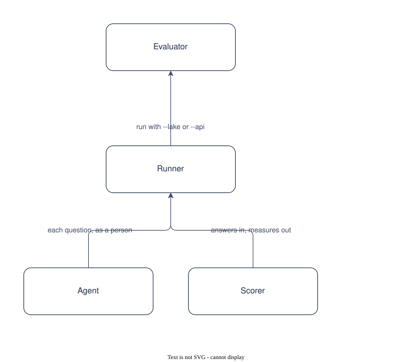

UC-007 Evaluate the answers
Evaluate the answers
Use case, reversed from the implementation at 0.3.0. Draft.
The solution in one sentence
An evaluator runs a set of questions with the facts a right answer states and the documents it should cite against a lake or the deployed chat, and reads a deterministic score, so that a release or an ontology change can be judged against the last.
Grounded is not the same as right. Without a set and a scorer, a change to the prompt, the ontology or the model cannot be compared.
What is different afterwards
A report with accuracy, mean score, grounded share, source hits, false abstentions and missed abstentions, overall and per question kind.
The solution on one page

Generated from the Participants and Interactions tables with the model skill; components.drawio is the source.
Participants
| Participant | Role in this use case | Kind |
|---|---|---|
| 01 Evaluator | Writes the set, runs it, reads the report | actor |
| 02 Runner | In-process or against the API | solution |
| 03 Agent | Answers each question | solution |
| 04 Scorer | Deterministic measures and the report | solution |
Interactions
| Interface | Provider | Consumer | Purpose |
|---|---|---|---|
| IF-01 | 02 Runner | 01 Evaluator | run with --lake or --api |
| IF-02 | 03 Agent | 02 Runner | each question, as a person |
| IF-03 | 04 Scorer | 02 Runner | answers in, measures out |
Catalogue Mapping
What each local participant stands for in the catalogue: an actor or an external system is a gap by design (no artefact of this catalogue realises a person or a vendor); a solution participant realises or partly realises a building block.
| Local ID | Maps To | Relationship |
|---|---|---|
| 01 | gap | gap |
| 02 | ABB-021 Evaluation runner | realises |
| 03 | ABB-014 Answering agent | realises |
| 04 | ABB-021 Evaluation runner | partial |
The flow
Data and measures
- The set, the answers with claims_proposed and claims_shown, the report